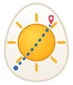

<!DOCTYPE html>
<html lang="en">
<head>
<meta charset="utf-8">
<meta name="viewport" content="width=device-width, initial-scale=1">
<title>Sunny Upside Down — sun-aware walking routes for Budapest</title>
<link rel="icon" href="logo.svg" type="image/svg+xml">
<link rel="stylesheet" href="https://unpkg.com/leaflet@1.9.4/dist/leaflet.css">
<style>
  :root{
    --sun:#f6a821; --sun-dark:#e88a00; --shade:#5b6b8c; --ink:#2d2a24;
    --paper:#fffdf7; --line:#e8e0cf; --accent:#2b6cb0; --danger:#e53e3e;
  }
  *{box-sizing:border-box}
  html,body{height:100%;margin:0}
  body{font-family:-apple-system,BlinkMacSystemFont,"Segoe UI",Roboto,sans-serif;color:var(--ink)}
  #app{display:flex;height:100%}
  #panel{
    width:360px;min-width:300px;max-width:45vw;height:100%;overflow-y:auto;
    background:var(--paper);border-right:1px solid var(--line);padding:14px 16px 24px;
    display:flex;flex-direction:column;gap:12px;flex-shrink:0;
  }
  #map{flex:1;height:100%}
  header{display:flex;align-items:center;gap:10px}
  header img{width:44px;height:52px}
  header h1{font-size:19px;margin:0;line-height:1.1}
  header .tag{font-size:11.5px;color:#8a8272;margin-top:2px}
  .field label.lbl{display:block;font-size:12px;font-weight:600;color:#6b6353;margin-bottom:3px}
  .row{display:flex;gap:6px;align-items:center}
  input[type=text],input[type=date]{
    flex:1;width:100%;padding:8px 10px;border:1px solid var(--line);border-radius:8px;
    font-size:14px;background:#fff;
  }
  input:focus{outline:2px solid var(--sun);border-color:var(--sun)}
  button{
    padding:8px 10px;border:1px solid var(--line);border-radius:8px;background:#fff;
    cursor:pointer;font-size:13px;color:var(--ink);white-space:nowrap;
  }
  button:hover{background:#fff6e3;border-color:var(--sun)}
  button.primary{background:var(--sun);border-color:var(--sun-dark);color:#fff;font-weight:700;font-size:15px;padding:10px}
  button.primary:hover{background:var(--sun-dark)}
  button.primary:disabled{background:#e7d9b8;border-color:#d9c9a4;cursor:wait}
  button.toggled{background:#fff1d0;border-color:var(--sun-dark)}
  /* time slider */
  .timebox{border:1px solid var(--line);border-radius:10px;background:#fff;padding:8px 10px}
  #timeLabel{font-weight:700;font-size:15px;min-width:52px;text-align:center}
  input[type=range]{flex:1;accent-color:var(--sun);height:24px}
  .chk{display:flex;gap:7px;align-items:center;font-size:13px;cursor:pointer;
       border:1px solid var(--line);border-radius:8px;background:#fff;padding:8px 10px}
  .chk input{accent-color:var(--sun-dark)}
  .geo-results{border:1px solid var(--line);border-radius:8px;background:#fff;overflow:hidden;display:none}
  .geo-results div{padding:7px 10px;font-size:12.5px;cursor:pointer;border-bottom:1px solid #f2ecdd}
  .geo-results div:hover{background:#fff6e3}
  .modes{display:flex;flex-direction:column;gap:4px}
  .modes label{
    display:flex;gap:8px;align-items:center;padding:7px 9px;border:1px solid var(--line);
    border-radius:8px;cursor:pointer;font-size:13.5px;background:#fff;
  }
  .modes label:has(input:checked){border-color:var(--sun-dark);background:#fff1d0;font-weight:600}
  .modes small{color:#8a8272;font-weight:400;margin-left:auto;text-align:right}
  #status{font-size:12.5px;color:#6b6353;min-height:17px}
  #status.err{color:var(--danger);font-weight:600}
  #results{display:none;border:1px solid var(--line);border-radius:10px;background:#fff;padding:10px 12px;font-size:13px}
  #results h3{margin:0 0 6px;font-size:13px}
  .stat-route{display:flex;justify-content:space-between;gap:8px;padding:5px 0;border-bottom:1px dashed #eee7d6}
  .stat-route:last-child{border-bottom:none}
  .sunbar{height:8px;border-radius:4px;background:var(--shade);overflow:hidden;margin-top:3px}
  .sunbar i{display:block;height:100%;background:linear-gradient(90deg,#ffd94d,var(--sun))}
  .delta{font-size:12px;color:#6b6353;margin-top:7px;line-height:1.45}
  .delta b.up{color:var(--sun-dark)} .delta b.down{color:var(--shade)}
  #cloudNote{font-size:12px;color:#6b6353;margin-top:6px}
  .legend{display:flex;gap:12px;font-size:11.5px;color:#6b6353;margin-top:8px;flex-wrap:wrap}
  .legend span::before{content:"";display:inline-block;width:14px;height:4px;border-radius:2px;margin-right:4px;vertical-align:middle}
  .legend .l-sun::before{background:var(--sun)} .legend .l-shade::before{background:var(--shade)}
  .legend .l-fast::before{background:#9a9a9a}
  footer{font-size:10.5px;color:#a09880;margin-top:auto;line-height:1.5}
  footer a{color:#a09880}
  .poi-icon{font-size:16px;text-shadow:0 0 3px #fff}
  .popup-btns{display:flex;gap:6px;margin-top:6px}
  .popup-btns button{font-size:12px;padding:5px 8px}
  @media (max-width:700px){
    #app{flex-direction:column-reverse}
    #panel{width:100%;max-width:none;height:auto;max-height:55vh;border-right:none;border-top:1px solid var(--line)}
    #map{min-height:45vh}
  }
</style>
</head>
<body>
<div id="app">
  <aside id="panel">
    <header>
      
      <div>
        <h1>Sunny Upside Down</h1>
        <div class="tag">sun-aware walking routes · Budapest 🇭🇺</div>
      </div>
    </header>

    <div class="field timebox">
      <label class="lbl">Time of day — drag to watch shadows move 🕐</label>
      <div class="row">
        <span id="timeLabel">12:00</span>
        <input type="range" id="timeSlider" min="0" max="1430" step="10" value="720">
      </div>
      <div class="row" style="margin-top:6px">
        <input type="date" id="dateInput">
        <button id="nowBtn">Now</button>
      </div>
    </div>

    <div class="row">
      <label class="chk" style="flex:1"><input type="checkbox" id="shadowChk" checked> 🏙️ Shadows on map</label>
      <button id="keyBtn" title="Shadow engine settings (ShadeMap key)">⚙️</button>
      <button id="poiBtn">🍽️ Food &amp; drinks</button>
    </div>

    <div class="field">
      <label class="lbl">From</label>
      <div class="row">
        <input type="text" id="fromInput" placeholder="Address, or click the map…">
        <button id="locBtn" title="Use my location">📍</button>
      </div>
      <div class="geo-results" id="fromResults"></div>
    </div>

    <div class="field">
      <label class="lbl">To <button id="swapBtn" title="Swap" style="padding:1px 7px;font-size:12px;margin-left:4px">⇅</button></label>
      <div class="row">
        <input type="text" id="toInput" placeholder="Where do you want to walk?">
      </div>
      <div class="geo-results" id="toResults"></div>
    </div>

    <div class="field">
      <label class="lbl">Route mode</label>
      <div class="modes">
        <label><input type="radio" name="mode" value="fastest"> ⚡ Fastest <small>ignore sun</small></label>
        <label><input type="radio" name="mode" value="sunnyish" checked> 🌤️ Sunnier <small>close to fastest, more sun</small></label>
        <label><input type="radio" name="mode" value="sunmax"> ☀️ 100% sun <small>ETA doesn't matter</small></label>
        <label><input type="radio" name="mode" value="shadyish"> ⛅ Shadier <small>hot-day mode</small></label>
        <label><input type="radio" name="mode" value="shademax"> 🌑 100% shade <small>full vampire mode</small></label>
      </div>
    </div>

    <button class="primary" id="goBtn">Find my sunny route</button>

    <div id="status"></div>

    <div id="results">
      <h3>Your walk</h3>
      <div id="statsBody"></div>
      <div id="cloudNote"></div>
      <div class="legend">
        <span class="l-sun">in the sun</span>
        <span class="l-shade">in shade</span>
        <span class="l-fast">fastest route</span>
      </div>
    </div>

    <footer>
      Map &amp; places © <a href="https://www.openstreetmap.org/copyright" target="_blank">OpenStreetMap</a> contributors ·
      Search by Nominatim · Street/building data via Overpass API · Cloud forecast by Open-Meteo ·
      Shadows computed from building heights &amp; sun position. Walking speed 4.7&nbsp;km/h.
    </footer>
  </aside>
  <div id="map"></div>
</div>

<script src="https://unpkg.com/leaflet@1.9.4/dist/leaflet.js"></script>
<script src="https://unpkg.com/leaflet-shadow-simulator/dist/leaflet-shadow-simulator.umd.min.js"></script>
<!-- Optional keys from your local .env, served by serve.py. Safe to 404 (no .env = no keys). -->
<script src="config.js" onerror="window.SUD_CONFIG={}"></script>
<script>
"use strict";

/* ============================================================
   Sunny Upside Down v2
   - Tile-based OSM loading: pan the map, shadows appear (like shademap.app)
   - Shadows on by default, time slider scrubs them through the day
   - Same engine powers routing: rays from street points toward the sun
   ============================================================ */

// ---------- constants ----------
const BUDAPEST = {lat:47.4977, lon:19.0546};   // Deák Ferenc tér — dense, instant wow
// {osm_id: height_m}, real measured heights (Copernicus Urban Atlas, ~3m accuracy) for
// ~122k Budapest buildings — overrides the flat 12m guess wherever OSM has no height tag.
// Populated by loadCopernicusHeights() before any building is parsed.
let copernicusHeights = {};
const BUDAPEST_VIEWBOX = "18.90,47.63,19.36,47.32";
const WALK_SPEED_MPS = 4.7 * 1000/3600;
const CELL = 30;                    // spatial grid cell for ray casting, meters
const SAMPLE_STEP = 8;              // street sampling distance, meters
const MAX_RAY = 400;                // max shadow-ray length, meters
const MAX_CROW_KM = 7;
const SHADOW_MIN_ZOOM = 16;
const TILE_LAT = 0.0045, TILE_LON = 0.0068;    // ~500 m tiles
const TILE_TTL = 45*86400000;                  // refresh tiles older than 45 days
// canopy.png: real vegetation heights (Meta/WRI global canopy-height map, p95 per ~19x28m
// cell) for the whole Budapest area — a byte-per-pixel grayscale grid, height in meters,
// 0 = no canopy. Georeferencing is fixed at build time (see docs/build_canopy.py); pixel
// (0,0) is this corner, row+ = south, col+ = east.
const CANOPY_LAT0 = 47.65, CANOPY_LON0 = 18.85, CANOPY_RES = 1/4000;
let canopyGrid = null, canopyW = 0, canopyH = 0;   // Uint8Array, filled by loadCanopy()
function canopyAt(lat, lon){
  if(!canopyGrid) return 0;
  const row = Math.floor((CANOPY_LAT0 - lat) / CANOPY_RES);
  const col = Math.floor((lon - CANOPY_LON0) / CANOPY_RES);
  if(row<0 || row>=canopyH || col<0 || col>=canopyW) return 0;
  return canopyGrid[row*canopyW + col];
}
const MODE_PENALTY = { fastest:[0,0], sunnyish:[2.5,0], sunmax:[40,0], shadyish:[0,2.5], shademax:[0,40] };
const OVERPASS_MIRRORS = [
  {name:"overpass-api.de", url:"https://overpass-api.de/api/interpreter"},
  {name:"private.coffee",  url:"https://overpass.private.coffee/api/interpreter"},
  {name:"kumi.systems",    url:"https://overpass.kumi.systems/api/interpreter"},
  {name:"maps.mail.ru",    url:"https://maps.mail.ru/osm/tools/overpass/api/interpreter"}
];

// ---------- sun position (based on SunCalc, MIT — Vladimir Agafonkin) ----------
const RAD = Math.PI/180, OBLIQ = RAD*23.4397;
function sunPosition(date, lat, lon){
  const lw = RAD * -lon, phi = RAD * lat;
  const d = date.getTime()/86400000 - 0.5 + 2440588 - 2451545;
  const M = RAD * (357.5291 + 0.98560028 * d);
  const C = RAD * (1.9148*Math.sin(M) + 0.02*Math.sin(2*M) + 0.0003*Math.sin(3*M));
  const L = M + C + RAD*102.9372 + Math.PI;
  const dec = Math.asin(Math.sin(OBLIQ)*Math.sin(L));
  const ra  = Math.atan2(Math.sin(L)*Math.cos(OBLIQ), Math.cos(L));
  const H   = RAD*(280.16 + 360.9856235*d) - lw - ra;
  const alt = Math.asin(Math.sin(phi)*Math.sin(dec) + Math.cos(phi)*Math.cos(dec)*Math.cos(H));
  const azS = Math.atan2(Math.sin(H), Math.cos(H)*Math.sin(phi) - Math.tan(dec)*Math.cos(phi));
  const compass = azS + Math.PI;
  return {altitude:alt, compass, dirx:Math.sin(compass), diry:Math.cos(compass), tanAlt:Math.tan(alt)};
}

// ---------- map ----------
const map = L.map("map").setView([BUDAPEST.lat, BUDAPEST.lon], 16);
L.tileLayer("https://tile.openstreetmap.org/{z}/{x}/{y}.png",
  {maxZoom:19, attribution:'© OpenStreetMap contributors'}).addTo(map);

const shadowLayer = L.layerGroup().addTo(map);
const shadowRenderer = L.canvas({padding:0.4});   // canvas: SVG can't handle 20k+ shadow rings
const routeLayer  = L.layerGroup().addTo(map);
const poiLayer    = L.layerGroup().addTo(map);

let startMarker=null, destMarker=null;
const sunIcon = L.divIcon({className:"", html:'<div style="font-size:26px;line-height:26px">🌞</div>', iconSize:[26,26], iconAnchor:[13,13]});
const pinIcon = L.divIcon({className:"", html:'<div style="font-size:28px;line-height:28px">📍</div>', iconSize:[28,28], iconAnchor:[14,26]});

function setStart(lat,lon,label){
  if(startMarker) startMarker.remove();
  startMarker = L.marker([lat,lon],{icon:sunIcon,draggable:true}).addTo(map).bindTooltip("Start");
  startMarker.on("dragend", ()=>maybeRoute());
  if(label) document.getElementById("fromInput").value = label;
  maybeRoute();
}
function setDest(lat,lon,label){
  if(destMarker) destMarker.remove();
  destMarker = L.marker([lat,lon],{icon:pinIcon,draggable:true}).addTo(map).bindTooltip("Destination");
  destMarker.on("dragend", ()=>maybeRoute());
  if(label) document.getElementById("toInput").value = label;
  maybeRoute();
}
window._setStart = setStart; window._setDest = setDest;

map.on("click", (e)=>{
  const {lat,lng} = e.latlng;
  const html = `<b>Set this point as…</b><div class="popup-btns">
    <button onclick="_setStart(${lat.toFixed(6)},${lng.toFixed(6)},'${lat.toFixed(4)}, ${lng.toFixed(4)}');map.closePopup()">🌞 Start</button>
    <button onclick="_setDest(${lat.toFixed(6)},${lng.toFixed(6)},'${lat.toFixed(4)}, ${lng.toFixed(4)}');map.closePopup()">📍 Destination</button>
  </div>`;
  L.popup().setLatLng(e.latlng).setContent(html).openOn(map);
});

// ---------- status ----------
const statusEl = document.getElementById("status");
function setStatus(msg, isErr){ statusEl.textContent = msg||""; statusEl.className = isErr?"err":""; }
function breathe(){ return new Promise(r=>setTimeout(r,25)); }

// ---------- time controls ----------
const dateInput = document.getElementById("dateInput");
const timeSlider = document.getElementById("timeSlider");
const timeLabel = document.getElementById("timeLabel");
function pad(n){ return String(n).padStart(2,"0"); }
function setNow(){
  const d = new Date();
  dateInput.value = `${d.getFullYear()}-${pad(d.getMonth()+1)}-${pad(d.getDate())}`;
  timeSlider.value = Math.round((d.getHours()*60+d.getMinutes())/10)*10;
  updateTimeLabel();
}
function updateTimeLabel(){
  const m=+timeSlider.value;
  timeLabel.textContent = `${pad(Math.floor(m/60))}:${pad(m%60)}`;
}
function chosenDate(){
  const d = dateInput.value ? new Date(dateInput.value+"T00:00:00") : new Date();
  d.setMinutes(+timeSlider.value);
  return d;
}
setNow();
// Shareable links: ?t=17:30&d=2026-07-31&ll=47.4977,19.0546,17
(function applyUrlParams(){
  const p = new URLSearchParams(location.search);
  const t = p.get("t");
  if(t && /^\d{1,2}:\d{2}$/.test(t)){
    const [h,m] = t.split(":").map(Number);
    timeSlider.value = Math.min(1430, Math.max(0, Math.round((h*60+m)/10)*10));
    updateTimeLabel();
  }
  const d = p.get("d");
  if(d && /^\d{4}-\d{2}-\d{2}$/.test(d)) dateInput.value = d;
  const ll = p.get("ll");
  if(ll){
    const [la,lo,z] = ll.split(",").map(Number);
    if(isFinite(la) && isFinite(lo)) map.setView([la,lo], isFinite(z)?z:map.getZoom());
  }
})();
function updateShadowTime(){       // route to whichever shadow engine is active
  if(smLayer){ if(shadowChk.checked) smLayer.setDate(chosenDate()); }
  else redrawShadows();
}
document.getElementById("nowBtn").onclick = ()=>{ setNow(); updateShadowTime(); maybeRoute(); };
let sliderT=null;
timeSlider.addEventListener("input", ()=>{        // dragging: live shadow scrub
  updateTimeLabel();
  clearTimeout(sliderT); sliderT=setTimeout(updateShadowTime, 100);
});
timeSlider.addEventListener("change", ()=>{        // released: recompute route too
  updateShadowTime(); maybeRoute();
});
dateInput.addEventListener("change", ()=>{ updateShadowTime(); maybeRoute(); });
document.querySelectorAll('input[name=mode]').forEach(r=>r.addEventListener("change", ()=>maybeRoute()));

// ---------- geocoding (Nominatim) ----------
function hookGeocoder(inputId, resultsId, isStart){
  const inp = document.getElementById(inputId), box = document.getElementById(resultsId);
  let t=null;
  inp.addEventListener("input", ()=>{ clearTimeout(t); t=setTimeout(search, 700); });
  inp.addEventListener("keydown", e=>{ if(e.key==="Enter"){ clearTimeout(t); search(); }});
  async function search(){
    const q = inp.value.trim();
    if(q.length<3){ box.style.display="none"; return; }
    try{
      const url = `https://nominatim.openstreetmap.org/search?format=json&limit=5&bounded=1&viewbox=${BUDAPEST_VIEWBOX}&q=${encodeURIComponent(q)}`;
      const res = await fetch(url, {headers:{"Accept-Language":"en"}});
      const data = await res.json();
      box.innerHTML="";
      if(!data.length){ box.innerHTML="<div>No hits in Budapest — try adding a district or street.</div>"; }
      for(const hit of data){
        const div = document.createElement("div");
        div.textContent = hit.display_name.split(",").slice(0,3).join(",");
        div.onclick = ()=>{
          box.style.display="none";
          inp.value = div.textContent;
          const la=parseFloat(hit.lat), lo=parseFloat(hit.lon);
          (isStart?setStart:setDest)(la,lo,div.textContent);
          map.setView([la,lo], Math.max(map.getZoom(),16));
        };
        box.appendChild(div);
      }
      box.style.display="block";
    }catch(err){ setStatus("Address search failed (Nominatim busy?) — try again.", true); }
  }
}
hookGeocoder("fromInput","fromResults",true);
hookGeocoder("toInput","toResults",false);

document.getElementById("locBtn").onclick = ()=>{
  if(!navigator.geolocation) return setStatus("Geolocation not available in this browser.", true);
  setStatus("Locating you…");
  navigator.geolocation.getCurrentPosition(
    p=>{ setStatus(""); setStart(p.coords.latitude,p.coords.longitude,"My location"); map.setView([p.coords.latitude,p.coords.longitude],16); },
    ()=>setStatus("Couldn't get your location — click the map instead.", true)
  );
};

document.getElementById("swapBtn").onclick = ()=>{
  if(!startMarker || !destMarker) return;
  const a = startMarker.getLatLng(), b = destMarker.getLatLng();
  const fi = document.getElementById("fromInput"), ti = document.getElementById("toInput");
  const tmp = fi.value; fi.value = ti.value; ti.value = tmp;
  setStart(b.lat,b.lng,null); setDest(a.lat,a.lng,null);
};

// ---------- Overpass fetch with mirror failover ----------
async function overpassFetch(query, label){
  let lastErr;
  for(let i=0;i<OVERPASS_MIRRORS.length;i++){
    const m=OVERPASS_MIRRORS[i];
    if(label) setStatus(`${label} — server ${i+1}/${OVERPASS_MIRRORS.length} (${m.name})… free servers can need a minute ☕`);
    const ctrl=new AbortController();
    const timer=setTimeout(()=>ctrl.abort("timeout"), 75000);
    try{
      const res = await fetch(m.url,{method:"POST",body:"data="+encodeURIComponent(query),
        headers:{"Content-Type":"application/x-www-form-urlencoded"}, signal:ctrl.signal});
      if(!res.ok) throw new Error("HTTP "+res.status);
      const j = await res.json();
      if(!j || !Array.isArray(j.elements)) throw new Error("bad response");
      return j;
    }catch(e){ lastErr=e; }
    finally{ clearTimeout(timer); }
  }
  throw new Error("all free OpenStreetMap servers are busy — wait a minute and try again ("+(lastErr && lastErr.message||lastErr)+")");
}

// ---------- tile store: the city, downloaded once, kept on your device ----------
const tileMem = new Map();   // key -> {ts, ways:[], buildings:[], trees:[]}
let idbP=null;
function idb(){
  if(!idbP) idbP = new Promise((res,rej)=>{
    const r=indexedDB.open("sud-tiles-v4",1);   // v4: real Copernicus building heights
    r.onupgradeneeded=()=>r.result.createObjectStore("tiles");
    r.onsuccess=()=>res(r.result); r.onerror=()=>rej(r.error);
  });
  return idbP;
}
function tileKeysFor(bb){ // [s,w,n,e]
  const y0=Math.floor(bb[0]/TILE_LAT), y1=Math.floor(bb[2]/TILE_LAT);
  const x0=Math.floor(bb[1]/TILE_LON), x1=Math.floor(bb[3]/TILE_LON);
  const keys=[];
  for(let y=y0;y<=y1;y++) for(let x=x0;x<=x1;x++) keys.push(y+"_"+x);
  return keys;
}
function tileBounds(key){
  const [y,x]=key.split("_").map(Number);
  return [y*TILE_LAT, x*TILE_LON, (y+1)*TILE_LAT, (x+1)*TILE_LON];
}
async function idbGetTiles(keys){
  try{
    const db=await idb();
    return await new Promise((res)=>{
      const st=db.transaction("tiles").objectStore("tiles");
      const out={}; let n=0;
      if(!keys.length) return res(out);
      for(const k of keys){
        const rq=st.get(k);
        rq.onsuccess=()=>{ if(rq.result) out[k]=rq.result; if(++n===keys.length) res(out); };
        rq.onerror =()=>{ if(++n===keys.length) res(out); };
      }
    });
  }catch(e){ return {}; }
}
async function idbPutTiles(entries){
  try{
    const db=await idb();
    await new Promise((res,rej)=>{
      const tx=db.transaction("tiles","readwrite"), st=tx.objectStore("tiles");
      for(const [k,v] of entries) st.put(v,k);
      tx.oncomplete=res; tx.onerror=()=>rej(tx.error);
    });
  }catch(e){ /* cache is best-effort */ }
}

// A real building is never a kilometre across; anything bigger is bad geometry.
function plausibleBuilding(s,w,n,e){
  const spanLat=(n-s)*110540, spanLon=(e-w)*111320*Math.cos(((n+s)/2)*RAD);
  return spanLat>0 && spanLon>0 && spanLat<600 && spanLon<600;
}

// Chain multipolygon member ways into closed rings (OSM splits long outlines into fragments).
function assembleRings(members){
  const frags=[];
  for(const mem of members){
    if(mem.type!=="way" || mem.role==="inner" || !mem.geometry) continue;   // outer + untagged roles
    const pts=mem.geometry.filter(Boolean).map(g=>[g.lat,g.lon]);
    if(pts.length>=2) frags.push(pts);
  }
  const key=p=>p[0].toFixed(7)+","+p[1].toFixed(7);
  const rings=[], used=new Array(frags.length).fill(false);
  for(let i=0;i<frags.length;i++){
    if(used[i]) continue;
    used[i]=true;
    let ring=frags[i].slice();
    let grew=true;
    while(grew && key(ring[0])!==key(ring[ring.length-1])){
      grew=false;
      for(let j=0;j<frags.length;j++){
        if(used[j]) continue;
        const f=frags[j], tail=key(ring[ring.length-1]);
        if(key(f[0])===tail){ ring=ring.concat(f.slice(1)); used[j]=true; grew=true; break; }
        if(key(f[f.length-1])===tail){ ring=ring.concat(f.slice(0,-1).reverse()); used[j]=true; grew=true; break; }
      }
    }
    if(ring.length>=4 && key(ring[0])===key(ring[ring.length-1])) rings.push(ring);
  }
  return rings;
}

// Height priority: 1) explicit OSM tag (authoritative, when someone measured/surveyed it)
// 2) Copernicus Urban Atlas measured height for this exact OSM building (real, ~3m accuracy,
//    from stereo satellite imagery — see building_heights.json) 3) flat guess, last resort.
function parseHeight(tags, osmId){
  if(tags.height){ const v=parseFloat(tags.height); if(v>0) return Math.min(v,150); }
  if(tags["building:levels"]){ const v=parseFloat(tags["building:levels"]); if(v>0) return Math.min(v*3+2,150); }
  if(osmId!=null){ const cop=copernicusHeights[osmId]; if(cop) return Math.min(cop,150); }
  return 12;
}

// One fetch covers all missing tiles; results are sliced into tiles by bbox overlap.
let ensureChain = Promise.resolve();
function ensureArea(bb, label){
  const p = ensureChain.then(()=>ensureAreaInner(bb,label));
  ensureChain = p.catch(()=>{});
  return p;
}
async function ensureAreaInner(bb, label){
  const keys = tileKeysFor(bb);
  let missing = keys.filter(k=>!tileMem.has(k));
  let added = false;                  // true when new tiles reached memory (from disk OR network)
  if(missing.length){
    const fromDb = await idbGetTiles(missing);
    const now=Date.now();
    for(const k of Object.keys(fromDb)) if(now-fromDb[k].ts < TILE_TTL){ tileMem.set(k, fromDb[k]); added=true; }
    missing = missing.filter(k=>!tileMem.has(k));
  }
  if(!missing.length) return added;

  let s=90,w=180,n=-90,e=-180;
  for(const k of missing){ const tb=tileBounds(k);
    s=Math.min(s,tb[0]); w=Math.min(w,tb[1]); n=Math.max(n,tb[2]); e=Math.max(e,tb[3]); }
  const bboxStr=`${s},${w},${n},${e}`;
  const q=`[out:json][timeout:75];
(
  way["highway"~"^(footway|path|pedestrian|steps|living_street|residential|service|track|unclassified|tertiary|tertiary_link|secondary|secondary_link|primary|primary_link|cycleway)$"]["foot"!="no"]["access"!="private"](${bboxStr});
  way["building"](${bboxStr});
  way["building:part"](${bboxStr});
  relation["building"](${bboxStr});
  node["natural"="tree"](${bboxStr});
);
out geom qt;`;
  const data = await overpassFetch(q, label);

  const fetchKeys = tileKeysFor([s+1e-9, w+1e-9, n-1e-9, e-1e-9]);
  const fresh = {};
  for(const k of fetchKeys) fresh[k] = {ts:Date.now(), ways:[], buildings:[], trees:[]};
  const addTo = (bb2, obj, field)=>{
    for(const k of tileKeysFor(bb2)) if(fresh[k]) fresh[k][field].push(obj);
  };

  for(const el of data.elements){
    if(el.type==="way" && el.tags && el.tags.highway && el.geometry){
      const nodes=[], geom=[];
      let s2=90,w2=180,n2=-90,e2=-180;
      for(let i=0;i<el.geometry.length;i++){
        const g=el.geometry[i]; if(!g) continue;
        nodes.push(el.nodes[i]); geom.push([g.lat,g.lon]);
        s2=Math.min(s2,g.lat); w2=Math.min(w2,g.lon); n2=Math.max(n2,g.lat); e2=Math.max(e2,g.lon);
      }
      if(nodes.length>1) addTo([s2,w2,n2,e2], {id:el.id, nodes, geom}, "ways");
    } else if(el.type==="way" && el.tags && (el.tags.building||el.tags["building:part"]) && el.geometry){
      const ll=[];
      let s2=90,w2=180,n2=-90,e2=-180;
      for(const g of el.geometry){
        if(!g) continue;
        ll.push([g.lat,g.lon]);
        s2=Math.min(s2,g.lat); w2=Math.min(w2,g.lon); n2=Math.max(n2,g.lat); e2=Math.max(e2,g.lon);
      }
      if(ll.length>=3 && plausibleBuilding(s2,w2,n2,e2))
        addTo([s2,w2,n2,e2], {id:el.id, ll, h:parseHeight(el.tags, el.id), bb:[s2,w2,n2,e2]}, "buildings");
    } else if(el.type==="relation" && el.tags && el.tags.building && el.members){
      // Multipolygon buildings (Budapest courtyard blocks). An outer ring is often SPLIT
      // across several member ways, so fragments must be chained end-to-end into closed
      // rings — closing each fragment on its own would produce district-sized wedges.
      const h=parseHeight(el.tags, el.id);
      let mi=0;
      for(const ring of assembleRings(el.members)){
        let s2=90,w2=180,n2=-90,e2=-180;
        for(const [la,lo] of ring){
          s2=Math.min(s2,la); w2=Math.min(w2,lo); n2=Math.max(n2,la); e2=Math.max(e2,lo);
        }
        if(!plausibleBuilding(s2,w2,n2,e2)) continue;
        addTo([s2,w2,n2,e2], {id:"r"+el.id+"_"+(mi++), ll:ring, h, bb:[s2,w2,n2,e2]}, "buildings");
      }
    } else if(el.type==="node" && el.tags && el.tags.natural==="tree"){
      let th=9, tr=4;
      if(el.tags.height){ const v=parseFloat(el.tags.height); if(v>0) th=v; }
      if(el.tags.diameter_crown){ const v=parseFloat(el.tags.diameter_crown); if(v>0) tr=Math.min(v/2,12); }
      addTo([el.lat,el.lon,el.lat,el.lon], {id:el.id, lat:el.lat, lon:el.lon, r:tr, h:th}, "trees");
    }
  }
  for(const [k,t] of Object.entries(fresh)) tileMem.set(k,t);
  idbPutTiles(Object.entries(fresh));
  return true;   // fetched something new
}

// gather deduped objects from all tiles covering bb
function collect(bb){
  const ways=new Map(), buildings=new Map(), trees=new Map();
  for(const k of tileKeysFor(bb)){
    const t=tileMem.get(k); if(!t) continue;
    for(const w of t.ways) ways.set(w.id,w);
    for(const b of t.buildings) buildings.set(b.id,b);
    for(const tr of t.trees) trees.set(tr.id,tr);
  }
  return {ways:[...ways.values()], buildings:[...buildings.values()], trees:[...trees.values()]};
}

// ---------- geometry ----------
let lat0=BUDAPEST.lat, lon0=BUDAPEST.lon, cosLat=Math.cos(BUDAPEST.lat*RAD);
function toXY(lat,lon){ return [ (lon-lon0)*111320*cosLat, (lat-lat0)*110540 ]; }

// ---------- routing world (graph + ray-casting grids), built from tiles ----------
const world = {
  graphBbox:null,
  nodeIdx:new Map(), xs:[], ys:[], lats:[], lons:[],
  edges:[], adj:[],
  segGrid:new Map(), treeGrid:new Map(), maxH:15,
  shadeTimeKey:null, sun:null
};
function gridKey(cx,cy){ return cx+","+cy; }
function gridPush(g,cx,cy,item){ const k=gridKey(cx,cy); let a=g.get(k); if(!a){a=[];g.set(k,a);} a.push(item); }
function bboxContainsBox(outer, inner){
  return inner[0]>=outer[0] && inner[1]>=outer[1] && inner[2]<=outer[2] && inner[3]<=outer[3];
}

function buildGraph(bb){
  const {ways,buildings,trees} = collect(bb);
  world.nodeIdx.clear(); world.xs=[]; world.ys=[]; world.lats=[]; world.lons=[];
  world.edges=[]; world.adj=[];
  world.segGrid.clear(); world.treeGrid.clear(); world.maxH=15; world.shadeTimeKey=null;
  lat0=(bb[0]+bb[2])/2; lon0=(bb[1]+bb[3])/2; cosLat=Math.cos(lat0*RAD);

  const getNode=(id,lat,lon)=>{
    let i=world.nodeIdx.get(id);
    if(i===undefined){
      i=world.xs.length; world.nodeIdx.set(id,i);
      const [x,y]=toXY(lat,lon);
      world.xs.push(x); world.ys.push(y); world.lats.push(lat); world.lons.push(lon);
      world.adj.push([]);
    }
    return i;
  };
  for(const w of ways){
    for(let k=0;k<w.nodes.length-1;k++){
      const a=getNode(w.nodes[k], w.geom[k][0], w.geom[k][1]);
      const b=getNode(w.nodes[k+1], w.geom[k+1][0], w.geom[k+1][1]);
      const len=Math.hypot(world.xs[a]-world.xs[b], world.ys[a]-world.ys[b]);
      if(len<0.1) continue;
      const eIdx=world.edges.length;
      world.edges.push({a,b,len,shade:0});
      world.adj[a].push([b,eIdx]); world.adj[b].push([a,eIdx]);
    }
  }
  for(const b of buildings){
    world.maxH=Math.max(world.maxH, Math.min(b.h,120));
    const pts=b.ll.map(([la,lo])=>toXY(la,lo));
    for(let k=0;k<pts.length-1;k++){
      const [x1,y1]=pts[k],[x2,y2]=pts[k+1];
      const seg={x1,y1,x2,y2,h:b.h};
      const cx0=Math.floor(Math.min(x1,x2)/CELL), cx1=Math.floor(Math.max(x1,x2)/CELL);
      const cy0=Math.floor(Math.min(y1,y2)/CELL), cy1=Math.floor(Math.max(y1,y2)/CELL);
      for(let cx=cx0;cx<=cx1;cx++) for(let cy=cy0;cy<=cy1;cy++) gridPush(world.segGrid,cx,cy,seg);
    }
  }
  for(const t of trees){
    const [x,y]=toXY(t.lat,t.lon);
    const cx=Math.floor(x/CELL), cy=Math.floor(y/CELL);
    for(let i=-1;i<=1;i++) for(let j=-1;j<=1;j++) gridPush(world.treeGrid,cx+i,cy+j,{x,y,r:t.r,h:t.h});
  }
  forEachCanopyCell(bb, (lat,lon,h)=>{
    const [x,y]=toXY(lat,lon);
    const r=CANOPY_RES*111320*0.55;   // half a cell's width, roughly circular coverage
    const cx=Math.floor(x/CELL), cy=Math.floor(y/CELL);
    for(let i=-1;i<=1;i++) for(let j=-1;j<=1;j++) gridPush(world.treeGrid,cx+i,cy+j,{x,y,r,h});
  });
  world.graphBbox=bb;
}

// Iterate canopy pixels whose center falls in bbox=[s,w,n,e], calling cb(lat,lon,heightM).
function forEachCanopyCell(bb, cb){
  if(!canopyGrid) return;
  const [s,w,n,e]=bb;
  const row0=Math.max(0, Math.floor((CANOPY_LAT0-n)/CANOPY_RES));
  const row1=Math.min(canopyH-1, Math.ceil((CANOPY_LAT0-s)/CANOPY_RES));
  const col0=Math.max(0, Math.floor((w-CANOPY_LON0)/CANOPY_RES));
  const col1=Math.min(canopyW-1, Math.ceil((e-CANOPY_LON0)/CANOPY_RES));
  for(let row=row0; row<=row1; row++){
    const base=row*canopyW;
    for(let col=col0; col<=col1; col++){
      const h=canopyGrid[base+col];
      if(h>0) cb(CANOPY_LAT0-(row+0.5)*CANOPY_RES, CANOPY_LON0+(col+0.5)*CANOPY_RES, h);
    }
  }
}

// ---------- shadow ray engine ----------
function raySegDist(px,py,dx,dy,s){
  const rx=s.x2-s.x1, ry=s.y2-s.y1;
  const denom = dx*ry - dy*rx;
  if(Math.abs(denom)<1e-12) return null;
  const t = ((s.x1-px)*ry - (s.y1-py)*rx)/denom;
  const u = ((s.x1-px)*dy - (s.y1-py)*dx)/denom;
  return (t>0.3 && u>=0 && u<=1) ? t : null;
}
function isShaded(px,py,sun){
  if(sun.tanAlt<=0) return true;
  const maxDist = Math.min(MAX_RAY, world.maxH/sun.tanAlt + 5);
  const dx=sun.dirx, dy=sun.diry;
  let cx=Math.floor(px/CELL), cy=Math.floor(py/CELL);
  const stepX = dx>0?1:-1, stepY = dy>0?1:-1;
  const tDeltaX = dx!==0 ? Math.abs(CELL/dx) : Infinity;
  const tDeltaY = dy!==0 ? Math.abs(CELL/dy) : Infinity;
  let tMaxX = dx!==0 ? (((cx+(dx>0?1:0))*CELL - px)/dx) : Infinity;
  let tMaxY = dy!==0 ? (((cy+(dy>0?1:0))*CELL - py)/dy) : Infinity;
  let travelled=0;
  for(let iter=0; iter<80 && travelled<=maxDist; iter++){
    const segs = world.segGrid.get(gridKey(cx,cy));
    if(segs) for(const s of segs){
      const t = raySegDist(px,py,dx,dy,s);
      if(t!==null && t<maxDist && s.h >= t*sun.tanAlt) return true;
    }
    const trees = world.treeGrid.get(gridKey(cx,cy));
    if(trees) for(const tr of trees){
      const ox=tr.x-px, oy=tr.y-py;
      const b = ox*dx+oy*dy;
      if(b<=0.3) continue;
      const d2 = ox*ox+oy*oy - b*b;
      if(d2 <= tr.r*tr.r && b<maxDist && tr.h >= b*sun.tanAlt) return true;
    }
    if(tMaxX<tMaxY){ travelled=tMaxX; tMaxX+=tDeltaX; cx+=stepX; }
    else           { travelled=tMaxY; tMaxY+=tDeltaY; cy+=stepY; }
  }
  return false;
}

async function computeShades(date){
  const key = Math.round(date.getTime()/300000);
  if(world.shadeTimeKey===key) return;
  const sun = sunPosition(date, lat0, lon0);
  setStatus(sun.altitude<=0
    ? "The sun is below the horizon then — everything is shade. 🌙"
    : "Scoring sunshine on every street… ☀️");
  await breathe();
  if(sun.altitude<=0){
    for(const e of world.edges) e.shade=1;
  } else {
    const E=world.edges, X=world.xs, Y=world.ys;
    for(let i=0;i<E.length;i++){
      const e=E[i];
      const n=Math.max(2, Math.ceil(e.len/SAMPLE_STEP));
      let shaded=0;
      const ax=X[e.a], ay=Y[e.a], bx=X[e.b], by=Y[e.b];
      for(let k=0;k<n;k++){
        const t=(k+0.5)/n;
        if(isShaded(ax+(bx-ax)*t, ay+(by-ay)*t, sun)) shaded++;
      }
      e.shade=shaded/n;
      if((i&8191)===8191) await breathe();
    }
  }
  world.shadeTimeKey=key;
  world.sun=sun;
}

// ---------- routing ----------
function nearestNode(lat,lon){
  const [px,py]=toXY(lat,lon);
  let best=-1, bd=Infinity;
  for(let i=0;i<world.xs.length;i++){
    const dx=world.xs[i]-px, dy=world.ys[i]-py, d=dx*dx+dy*dy;
    if(d<bd){bd=d;best=i;}
  }
  return best;
}
function dijkstra(src,dst,shadePen,sunPen){
  const N=world.adj.length;
  const dist=new Float64Array(N).fill(Infinity);
  const prevN=new Int32Array(N).fill(-1), prevE=new Int32Array(N).fill(-1);
  const heap=[[0,src]]; dist[src]=0;
  while(heap.length){
    const top=heap[0], last=heap.pop();
    if(heap.length){ heap[0]=last; let i=0;
      for(;;){ let l=2*i+1,r=l+1,m=i;
        if(l<heap.length&&heap[l][0]<heap[m][0])m=l;
        if(r<heap.length&&heap[r][0]<heap[m][0])m=r;
        if(m===i)break; [heap[i],heap[m]]=[heap[m],heap[i]]; i=m; } }
    const [d,u]=top;
    if(u===dst) break;
    if(d>dist[u]) continue;
    for(const [v,eIdx] of world.adj[u]){
      const e=world.edges[eIdx];
      const wgt=e.len*(1 + shadePen*e.shade + sunPen*(1-e.shade));
      const nd=d+wgt;
      if(nd<dist[v]-1e-9){
        dist[v]=nd; prevN[v]=u; prevE[v]=eIdx;
        heap.push([nd,v]); let i=heap.length-1;
        while(i>0){ const p=(i-1)>>1;
          if(heap[p][0]<=heap[i][0])break;
          [heap[i],heap[p]]=[heap[p],heap[i]]; i=p; }
      }
    }
  }
  if(!isFinite(dist[dst])) return null;
  const nodes=[]; const edgeIdxs=[]; let u=dst;
  while(u!==-1){ nodes.push(u); if(prevE[u]!==-1) edgeIdxs.push(prevE[u]); u=prevN[u]; }
  nodes.reverse(); edgeIdxs.reverse();
  let lenM=0, sunM=0;
  for(const ei of edgeIdxs){ const e=world.edges[ei]; lenM+=e.len; sunM+=e.len*(1-e.shade); }
  return {nodes, edgeIdxs, lenM, sunM};
}

function bboxAround(a,b){
  const cos=Math.cos(((a.lat+b.lat)/2)*RAD);
  const crow = Math.hypot((a.lat-b.lat)*110540, (a.lng-b.lng)*111320*cos);
  const padM = Math.min(900, Math.max(300, crow*0.35));
  const padLat = padM/110540, padLon = padM/(111320*cos);
  return [ Math.min(a.lat,b.lat)-padLat, Math.min(a.lng,b.lng)-padLon,
           Math.max(a.lat,b.lat)+padLat, Math.max(a.lng,b.lng)+padLon, crow ];
}

// ---------- route orchestration ----------
let routing=false;
const goBtn=document.getElementById("goBtn");
function maybeRoute(){
  if(!startMarker||!destMarker) return;
  route().catch(err=>{ setStatus("Route error: "+err.message, true); });
}
goBtn.onclick = ()=>{
  if(!startMarker||!destMarker){ setStatus("Set a start and a destination first — search above or tap the map.", true); return; }
  if(routing){ setStatus("Still working on it — free map servers can be slow at peak hours ☕", false); return; }
  maybeRoute();
};

async function route(){
  if(routing){ return; }
  routing=true;
  goBtn.disabled=true; goBtn.textContent="Working… ☀️";
  try{
    const s=startMarker.getLatLng(), d=destMarker.getLatLng();
    const bb=bboxAround(s,d);
    if(bb[4] > MAX_CROW_KM*1000){
      setStatus(`That's ${(bb[4]/1000).toFixed(1)} km as the crow flies — long walk, big download. Hang on…`);
    }
    await ensureArea(bb, "Downloading streets & buildings");
    if(!world.graphBbox || !bboxContainsBox(world.graphBbox, bb.slice(0,4))){
      setStatus("Building the walking graph…"); await breathe();
      buildGraph(bb.slice(0,4));
    }
    const date=chosenDate();
    await computeShades(date);

    setStatus("Finding your route…"); await breathe();
    const a=nearestNode(s.lat,s.lng), b=nearestNode(d.lat,d.lng);
    if(a<0||b<0||a===b){ setStatus("Start and destination are too close or off the street network.", true); return; }

    const mode=document.querySelector('input[name=mode]:checked').value;
    const [shadePen,sunPen]=MODE_PENALTY[mode];
    const fastest=dijkstra(a,b,0,0);
    if(!fastest){ setStatus("No walking connection found between these points — try moving a marker.", true); return; }
    const chosen=(mode==="fastest")?fastest:dijkstra(a,b,shadePen,sunPen);

    drawRoutes(fastest, chosen, mode);
    showStats(fastest, chosen, mode, date);
    fetchClouds((s.lat+d.lat)/2,(s.lng+d.lng)/2,date);
    setStatus(world.sun.altitude<=0 ? "Night walk — the sun is down, every route is 100% shade. 🌙" : "");
  } finally {
    routing=false;
    goBtn.disabled=false; goBtn.textContent="Find my sunny route";
  }
}

function routeLatLngs(r){ return r.nodes.map(i=>[world.lats[i],world.lons[i]]); }
function drawRoutes(fastest, chosen, mode){
  routeLayer.clearLayers();
  if(mode!=="fastest"){
    L.polyline(routeLatLngs(fastest), {color:"#9a9a9a",weight:4,opacity:0.65,dashArray:"6 8"}).addTo(routeLayer);
  }
  for(let k=0;k<chosen.edgeIdxs.length;k++){
    const e=world.edges[chosen.edgeIdxs[k]];
    const n1=chosen.nodes[k], n2=chosen.nodes[k+1];
    L.polyline([[world.lats[n1],world.lons[n1]],[world.lats[n2],world.lons[n2]]],
      {color: e.shade<0.5?"#f6a821":"#5b6b8c", weight:6, opacity:0.92}).addTo(routeLayer);
  }
  map.fitBounds(L.latLngBounds(routeLatLngs(chosen)),{padding:[40,40]});
}

function fmtMin(m){ return m<60 ? Math.round(m)+" min" : Math.floor(m/60)+" h "+Math.round(m%60)+" min"; }
function modeName(m){ return {fastest:"⚡ Fastest",sunnyish:"🌤️ Sunnier",sunmax:"☀️ 100% sun",shadyish:"⛅ Shadier",shademax:"🌑 100% shade"}[m]; }
function compass8(az){
  const dirs=["north","north-east","east","south-east","south","south-west","west","north-west"];
  return dirs[Math.round(((az/RAD)%360+360)%360/45)%8];
}
function showStats(fastest, chosen, mode, date){
  const res=document.getElementById("results"), body=document.getElementById("statsBody");
  const fMin=fastest.lenM/WALK_SPEED_MPS/60, cMin=chosen.lenM/WALK_SPEED_MPS/60;
  const fSun=fastest.lenM?100*fastest.sunM/fastest.lenM:0, cSun=chosen.lenM?100*chosen.sunM/chosen.lenM:0;
  let html=`
    <div class="stat-route"><div><b>${modeName(mode)}</b><div class="sunbar" style="width:130px"><i style="width:${cSun.toFixed(0)}%"></i></div></div>
      <div style="text-align:right">${(chosen.lenM/1000).toFixed(2)} km · ${fmtMin(cMin)}<br><b>${cSun.toFixed(0)}% sun</b></div></div>`;
  if(mode!=="fastest"){
    html+=`<div class="stat-route"><div>⚡ Fastest (for comparison)<div class="sunbar" style="width:130px"><i style="width:${fSun.toFixed(0)}%"></i></div></div>
      <div style="text-align:right">${(fastest.lenM/1000).toFixed(2)} km · ${fmtMin(fMin)}<br>${fSun.toFixed(0)}% sun</div></div>`;
    const dSun=cSun-fSun, dMin=cMin-fMin;
    const rel = fSun>0.5 ? ` (${(100*dSun/fSun).toFixed(0)}% ${dSun>=0?"more":"less"} sun than the fastest route)` : "";
    const isShadeMode = mode==="shadyish"||mode==="shademax";
    html+=`<div class="delta">
      ${isShadeMode
        ? `🌑 <b class="down">${(-dSun).toFixed(0)} pp less sun</b>${rel}`
        : `☀️ <b class="up">+${dSun.toFixed(0)} pp sun</b>${rel}`}
      · ⏱ ${dMin>=0.5?`+${fmtMin(dMin)} longer`:`same time`}
    </div>`;
  }
  const sunAltDeg=(world.sun.altitude/RAD).toFixed(0);
  html+= world.sun.altitude<=0
    ? `<div class="delta">🌙 At ${pad(date.getHours())}:${pad(date.getMinutes())} the sun is below the horizon — slide to a daytime hour to chase it.</div>`
    : `<div class="delta">Sun at ${pad(date.getHours())}:${pad(date.getMinutes())}: ${sunAltDeg}° above horizon, shining from the ${compass8(world.sun.compass)}.</div>`;
  body.innerHTML=html;
  res.style.display="block";
}

// ---------- cloud forecast (Open-Meteo, free & keyless) ----------
async function fetchClouds(lat,lon,date){
  const el=document.getElementById("cloudNote");
  el.textContent="";
  try{
    const day=`${date.getFullYear()}-${pad(date.getMonth()+1)}-${pad(date.getDate())}`;
    const url=`https://api.open-meteo.com/v1/forecast?latitude=${lat.toFixed(3)}&longitude=${lon.toFixed(3)}&hourly=cloud_cover&timezone=Europe%2FBudapest&start_date=${day}&end_date=${day}`;
    const res=await fetch(url); const j=await res.json();
    const want=`${day}T${pad(date.getHours())}:00`;
    const i=j.hourly.time.indexOf(want);
    if(i>=0){
      const cc=j.hourly.cloud_cover[i];
      const icon= cc<25?"☀️": cc<60?"🌤️": cc<85?"⛅":"☁️";
      el.textContent=`${icon} Forecast for that hour: ${cc}% cloud cover${cc>=85?" — soft shadows, sun-seeking matters less.":cc<25?" — clear skies, enjoy!":""}`;
    }
  }catch(e){ /* forecast is a bonus */ }
}

// ---------- optional ShadeMap engine (the exact engine behind shademap.app) ----------
// With a free API key from https://shademap.app/about the shadow overlay is rendered by
// leaflet-shadow-simulator: GPU shadows including TERRAIN (Buda hills!) from free AWS
// elevation tiles, with buildings supplied from our own tile store. No key → built-in engine.
const SM_KEY = (window.SUD_CONFIG && window.SUD_CONFIG.SHADEMAP_API_KEY)   // from .env
            || localStorage.getItem("sud-shademap-key")                    // or pasted via ⚙️
            || "";
let smLayer = null;
function initSdkLayer(){
  if(!SM_KEY || typeof L.shadeMap !== "function") return false;
  try{
    smLayer = L.shadeMap({
      date: chosenDate(),
      color: "#01112f",
      opacity: 0.65,
      apiKey: SM_KEY,
      terrainSource: {                      // AWS Open Data terrarium DEM — free, no key
        tileSize: 256, maxZoom: 15,
        getSourceUrl: ({x,y,z}) => `https://s3.amazonaws.com/elevation-tiles-prod/terrarium/${z}/${x}/${y}.png`,
        getElevation: ({r,g,b,a}) => (r*256 + g + b/256) - 32768
      },
      getFeatures: async () => {
        if(map.getZoom() < SHADOW_MIN_ZOOM-1) return [];   // terrain-only when zoomed out
        const b=map.getBounds();
        const vb=[b.getSouth(),b.getWest(),b.getNorth(),b.getEast()];
        try{ await ensureArea(vb, "Loading buildings"); }catch(e){}
        const {buildings}=collect(vb);
        setStatus("");
        const feats = buildings.map(bl=>({
          type:"Feature",
          properties:{height: bl.h},
          geometry:{type:"Polygon", coordinates:[bl.ll.map(([la,lo])=>[lo,la])]}
        }));
        const half=CANOPY_RES/2;
        forEachCanopyCell(vb, (lat,lon,h)=>{
          feats.push({
            type:"Feature",
            properties:{height: h},
            geometry:{type:"Polygon", coordinates:[[
              [lon-half,lat-half],[lon+half,lat-half],[lon+half,lat+half],[lon-half,lat+half],[lon-half,lat-half]
            ]]}
          });
        });
        return feats;
      }
    });
    return true;
  }catch(e){
    smLayer=null;
    setStatus("ShadeMap engine failed to start ("+e.message+") — using built-in shadows.", true);
    return false;
  }
}
document.getElementById("keyBtn").onclick = ()=>{
  const cur = localStorage.getItem("sud-shademap-key") || "";
  const v = prompt(
"Shadow engine settings\n\n"+
"• Built-in engine (no key): building & tree shadows, flat terrain.\n"+
"• ShadeMap engine (free key): the exact engine behind shademap.app — GPU shadows including terrain (Buda hills!).\n\n"+
"Get a free key at  https://shademap.app/about  (email signup), paste it here.\n"+
"Leave empty to use the built-in engine.", cur);
  if(v===null) return;
  const t=v.trim();
  if(t) localStorage.setItem("sud-shademap-key", t); else localStorage.removeItem("sud-shademap-key");
  location.reload();
};

// ---------- shadow overlay: on by default, follows the map ----------
const shadowChk = document.getElementById("shadowChk");
let shadowSeq=0;
shadowChk.addEventListener("change", ()=>{
  if(smLayer){
    if(shadowChk.checked){ smLayer.setDate(chosenDate()); smLayer.addTo(map); }
    else smLayer.remove();
    return;
  }
  if(shadowChk.checked) refreshShadowArea();
  else { shadowLayer.clearLayers(); setStatus(""); }
});
map.on("moveend", ()=>{ refreshShadowArea(); if(poisOn) loadPois(); });

async function refreshShadowArea(){
  if(smLayer) return;                // ShadeMap engine repaints itself on map moves
  if(!shadowChk.checked) return;
  if(map.getZoom()<SHADOW_MIN_ZOOM){
    shadowLayer.clearLayers();
    setStatus("Zoom in a bit more to see shadows 🔍");
    return;
  }
  const seq=++shadowSeq;
  redrawShadows();                   // paint what's already on the device, instantly
  const b=map.getBounds();
  const padLat=250/110540, padLon=250/(111320*Math.cos(b.getCenter().lat*RAD));
  const vb=[b.getSouth()-padLat, b.getWest()-padLon, b.getNorth()+padLat, b.getEast()+padLon];
  try{
    const fetched = await ensureArea(vb, "Loading buildings for shadows");
    if(seq!==shadowSeq) return;      // superseded by a newer pan
    if(fetched){ setStatus(""); redrawShadows(); }
  }catch(e){
    if(seq===shadowSeq) setStatus("Shadows: "+e.message, true);
  }
}

function redrawShadows(){
  if(!shadowChk.checked) return;
  if(map.getZoom()<SHADOW_MIN_ZOOM) return;
  shadowLayer.clearLayers();
  const b=map.getBounds();
  const vb=[b.getSouth(), b.getWest(), b.getNorth(), b.getEast()];
  const c=b.getCenter();
  const sun=sunPosition(chosenDate(), c.lat, c.lng);
  if(sun.altitude<=0){
    setStatus("🌙 Sun is below the horizon at "+timeLabel.textContent+" — the whole city is shade. Slide to daytime!");
    return;
  }
  if(statusEl.textContent.startsWith("🌙")||statusEl.textContent.startsWith("Zoom in")) setStatus("");
  let {buildings,trees}=collect(vb);
  buildings=buildings.filter(bl=>bl.bb[2]>vb[0]&&bl.bb[0]<vb[2]&&bl.bb[3]>vb[1]&&bl.bb[1]<vb[3]);
  if(buildings.length>4000){
    const cy=(vb[0]+vb[2])/2, cx=(vb[1]+vb[3])/2;
    buildings.sort((p,q)=>
      (Math.abs((p.bb[0]+p.bb[2])/2-cy)+Math.abs((p.bb[1]+p.bb[3])/2-cx)) -
      (Math.abs((q.bb[0]+q.bb[2])/2-cy)+Math.abs((q.bb[1]+q.bb[3])/2-cx)));
    buildings=buildings.slice(0,4000);
  }
  const cosL=Math.cos(c.lat*RAD);
  const rings=[];
  const pushRing=(ring)=>{ // enforce CCW so overlapping rings merge visually (nonzero fill)
    let area=0;
    for(let i=0;i<ring.length;i++){
      const [la1,lo1]=ring[i], [la2,lo2]=ring[(i+1)%ring.length];
      area += (lo2-lo1)*cosL*(la2+la1);
    }
    rings.push(area<0 ? ring : ring.slice().reverse());
  };
  for(const bl of buildings){
    const Ls=Math.min(bl.h/sun.tanAlt, MAX_RAY);
    const dLat=(-sun.diry*Ls)/110540;
    const dLon=(-sun.dirx*Ls)/(111320*cosL);
    const ll=bl.ll;
    for(let k=0;k<ll.length-1;k++){
      pushRing([ ll[k], ll[k+1], [ll[k+1][0]+dLat, ll[k+1][1]+dLon], [ll[k][0]+dLat, ll[k][1]+dLon] ]);
    }
    pushRing(ll.map(([la,lo])=>[la+dLat, lo+dLon]));
  }
  for(const t of trees){
    if(t.lat<vb[0]-0.001||t.lat>vb[2]+0.001||t.lon<vb[1]-0.001||t.lon>vb[3]+0.001) continue;
    const Ls=0.75*t.h/sun.tanAlt;
    const cLat=t.lat+(-sun.diry*Ls)/110540;
    const cLon=t.lon+(-sun.dirx*Ls)/(111320*cosL);
    const ring=[];
    for(let a=0;a<12;a++){
      const ang=a/12*2*Math.PI;
      ring.push([cLat + t.r*Math.cos(ang)/110540, cLon + t.r*Math.sin(ang)/(111320*cosL)]);
    }
    pushRing(ring);
  }
  const canopyR = CANOPY_RES*111320*0.55;
  forEachCanopyCell(vb, (lat,lon,h)=>{
    const Ls=0.75*h/sun.tanAlt;
    const cLat=lat+(-sun.diry*Ls)/110540;
    const cLon=lon+(-sun.dirx*Ls)/(111320*cosL);
    const ring=[];
    for(let a=0;a<8;a++){
      const ang=a/8*2*Math.PI;
      ring.push([cLat + canopyR*Math.cos(ang)/110540, cLon + canopyR*Math.sin(ang)/(111320*cosL)]);
    }
    pushRing(ring);
  });
  if(rings.length){
    L.polygon(rings,{stroke:false,fillColor:"#3b4256",fillOpacity:0.30,fillRule:"nonzero",interactive:false,renderer:shadowRenderer}).addTo(shadowLayer);
  }
}

// ---------- POIs (restaurants & drinks) ----------
let poisOn=false, poiBusy=false;
document.getElementById("poiBtn").onclick=async function(){
  poisOn=!poisOn;
  this.classList.toggle("toggled",poisOn);
  if(!poisOn){ poiLayer.clearLayers(); return; }
  await loadPois();
};
async function loadPois(){
  if(poiBusy) return;
  if(map.getZoom()<15){ setStatus("Zoom in a bit to load restaurants & cafés."); return; }
  poiBusy=true;
  try{
    setStatus("Finding restaurants, cafés & bars… 🍽️");
    const b=map.getBounds();
    const bboxStr=`${b.getSouth()},${b.getWest()},${b.getNorth()},${b.getEast()}`;
    const q=`[out:json][timeout:30];
(
  node["amenity"~"^(restaurant|cafe|bar|pub|fast_food|ice_cream|biergarten)$"](${bboxStr});
  way["amenity"~"^(restaurant|cafe|bar|pub|fast_food|ice_cream|biergarten)$"](${bboxStr});
);
out center 250;`;
    const data=await overpassFetch(q);
    if(!poisOn) return;
    poiLayer.clearLayers();
    const icons={restaurant:"🍽️",cafe:"☕",bar:"🍸",pub:"🍺",fast_food:"🍔",ice_cream:"🍦",biergarten:"🍻"};
    for(const el of data.elements){
      const lat=el.lat??(el.center&&el.center.lat), lon=el.lon??(el.center&&el.center.lon);
      if(!lat) continue;
      const name=el.tags&&el.tags.name||"(unnamed)";
      const em=icons[el.tags&&el.tags.amenity]||"📍";
      const m=L.marker([lat,lon],{icon:L.divIcon({className:"poi-icon",html:em,iconSize:[18,18],iconAnchor:[9,9]})});
      m.bindPopup(`<b>${em} ${escapeHtml(name)}</b><br><small>${el.tags&&el.tags.amenity||""}${el.tags&&el.tags.cuisine?" · "+escapeHtml(el.tags.cuisine):""}</small>
        <div class="popup-btns"><button onclick="_setDest(${lat},${lon},'${escapeHtml(name).replace(/'/g,"\\'")}');map.closePopup()">☀️ Walk here</button></div>`);
      m.addTo(poiLayer);
    }
    setStatus("");
  }catch(e){ setStatus("Couldn't load places — "+e.message, true); }
  finally{ poiBusy=false; }
}
function escapeHtml(s){ return s.replace(/[&<>"]/g,c=>({"&":"&amp;","<":"&lt;",">":"&gt;",'"':"&quot;"}[c])); }

// ---------- startup ----------
// Real building heights: Copernicus Urban Atlas (EU stereo-satellite survey, ~3m vertical
// accuracy), pre-joined to Budapest's exact OSM building ids by osm_id. See README §
// "Shadow accuracy — real data behind the guesses" for where this comes from and why.
async function loadCopernicusHeights(){
  try{
    const res = await fetch("building_heights.json");
    if(res.ok) copernicusHeights = await res.json();
  }catch(e){ /* falls back to OSM tags / flat guess */ }
}
// Real vegetation: Meta/WRI global canopy-height map (aerial-LiDAR-trained, satellite-applied,
// free/public), pre-cropped to Budapest and PNG-packed. Decoded once via canvas, kept in memory
// as a plain byte grid — see README § "Shadow accuracy — real data behind the guesses".
async function loadCanopy(){
  try{
    const res = await fetch("canopy.png");
    if(!res.ok) return;
    const blob = await res.blob();
    const bitmap = await createImageBitmap(blob);
    const cnv = document.createElement("canvas");
    cnv.width = bitmap.width; cnv.height = bitmap.height;
    const ctx = cnv.getContext("2d");
    ctx.drawImage(bitmap, 0, 0);
    const px = ctx.getImageData(0, 0, bitmap.width, bitmap.height).data;
    const grid = new Uint8Array(bitmap.width * bitmap.height);
    for(let i=0;i<grid.length;i++) grid[i] = px[i*4];   // grayscale: R=G=B, read R
    canopyGrid = grid; canopyW = bitmap.width; canopyH = bitmap.height;
  }catch(e){ /* canopy is a bonus layer — OSM point-trees still work without it */ }
}
// seed.json ships downtown Budapest with the app, so the very first open
// paints shadows instantly even when the free OSM servers are busy.
async function loadSeed(){
  try{
    const centerKey = tileKeysFor([BUDAPEST.lat, BUDAPEST.lon, BUDAPEST.lat, BUDAPEST.lon])[0];
    const inDb = await idbGetTiles([centerKey]);
    if(inDb[centerKey]) return;              // device cache already has downtown
    const res = await fetch("seed.json");
    if(!res.ok) return;
    const j = await res.json();
    const now = Date.now();
    const entries = [];
    for(const [k,v] of Object.entries(j.tiles)){
      if(!tileMem.has(k)){
        const t = {ts:now, ways:v.ways, buildings:v.buildings, trees:v.trees};
        tileMem.set(k,t); entries.push([k,t]);
      }
    }
    if(entries.length) idbPutTiles(entries);
  }catch(e){ /* seed is a bonus — live fetch still works without it */ }
}
try{ indexedDB.deleteDatabase("sunny-upside-down"); }catch(e){}   // v1 cache, superseded
try{ indexedDB.deleteDatabase("sud-tiles-v1"); }catch(e){}        // pre-relations tiles
try{ indexedDB.deleteDatabase("sud-tiles-v2"); }catch(e){}        // had broken multipolygon rings
try{ indexedDB.deleteDatabase("sud-tiles-v3"); }catch(e){}        // pre-Copernicus-height tiles
// height lookup must be in place before seed.json (or any live Overpass fetch) parses a building
Promise.all([loadCopernicusHeights(), loadCanopy()]).then(loadSeed).then(()=>{
  if(initSdkLayer()){ if(shadowChk.checked) smLayer.addTo(map); }  // shademap.app engine
  else refreshShadowArea();                                        // built-in engine
});
</script>
</body>
</html>
